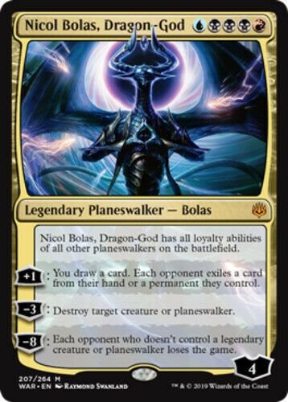
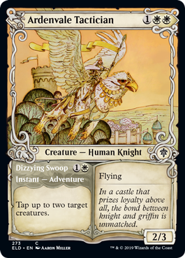
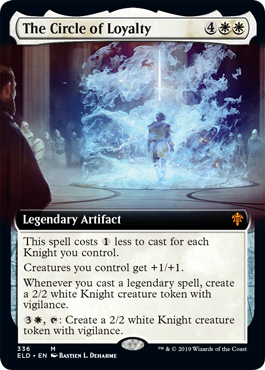
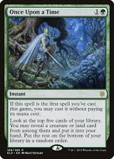
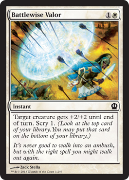
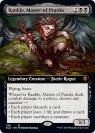
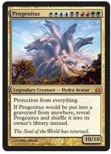
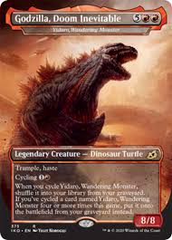

Magic: The Gathering
Коллекционная карточная игра
Magic: The Gathering первая в мире коллекционная карточная игра. Изобретена американским математиком Ричардом Гарфилдом в 1991 году. Изначально называлась «Mana Clash». Права на издание были куплены у автора компанией «Wizards of the Coast», которая выпустила первое коммерческое издание 5 августа 1993 года. Первыми фанатами новой игры стали любители ролевых игр. Со временем она завоевала сердца любителей стратегий. В середине девяностых разразился мировой бум коллекционных карточных игр. Многие из них ничем не выделились из массы себе подобных и ныне забыты. Дожить до наших дней «Магии» помогли качественная разработка, сбалансированность и грамотный маркетинг.

«Magic: The Gathering» постоянно обновляется и дополняется. Каждый год появляется 600—700 новых карт, разделённых на несколько наборов, называемых сетами. Карты внутри каждого сета объединены общими идеями и игровыми механиками. «Wizards of the Coast» выпускают новые карты четыре раза в год:

Начиная с истоков игры, компания-издатель старалась обеспечить MtG достойную турнирную поддержку. Для этого была создана спортивная организация, первоначально названная «Duelist Convocation International» или просто «The DCI». Компания и по сей день санкционирует турниры по всему миру: от драфтов на 8 человек до Гран-при на 4000 человек. DCI имеет официальных координаторов в более чем 100 странах. Когда игрок впервые принимает участие в DCI-санкционированном турнире, он получает уникальный личный номер «DCI PIN», который становится идентификатором игрока на всю его будущую карьеру. DCI централизованно обрабатывает результаты всех санкционированных турниров и рассчитывает рейтинг игроков по системе Эло (такая же система рейтинга используется, например, в соревнованиях по шахматам). Рейтинг игрока отображает его суммарную успешность в турнирных матчах. Для игроков профессионального уровня имеется ещё одна система рейтинга, основанная на накоплении в течение годичного «игрового сезона» так называемых «Pro Points», которые присваиваются игрокам за высокие места в престижных турнирах, подробнее описанных ниже. На основании этих данных ежегодно присваиваются почётные звания: «Player of the Year» — для набравшего наибольшее количество «Pro Points» и «Rookie of the Year» —для лучшего из «новичков» (игроков, не получавших «Pro Points» в предыдущих сезонах). Чемпионат Мира проводится в смешанном Standard, Limited формате. Остальные проводятся в форматах группы Limited, Block Constructed, Standard, Modern, Legacy и Vintage.
 